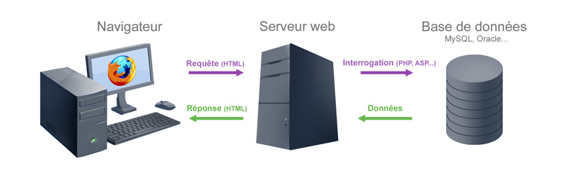
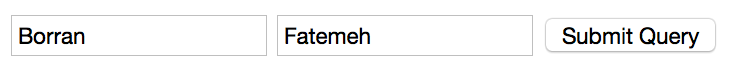

Création d'Applications sur Internet
Chapitre2: Fonctionnement du Web
Fatemeh BORRAN
Sommaire
- Architecture client/serveur
- Protocoles de communication
- Protocole TCP/IP
- Protocole HTTP
- URL
- Nom de domaine
Architecture client/serveur (1/4)
- Le Web est construit sur une architecture client/serveur.
- Votre ordinateur/tablet/smartphone joue le rôle du client.
- Les ordinateurs distants qui hébergent les fichiers électroniques (pages Web) sont les serveurs.
- Dans le contexte du Web, clients et serveurs sont reliés entre eux par Internet.
Architecture client/serveur (2/4)
- Un serveur peut fournir un ou plusieurs services, et ce, à un ou plusieurs clients.
- Le programme serveur et le ou les programmes clients peuvent se trouver sur la même machine ou sur des machines différentes, reliées entre elles par un réseau.
- Note: cette architecture n'est pas utilisée uniquement pour le Web!
Client/serveur désigne un mode de communication entre des programmes informatiques:
- un programme tient le rôle de "serveur": il est conçu de façon à pouvoir répondre à des requêtes extérieures;
- les autres programmes, "clients", contactent le serveur pour lui soumettre des demandes, et attendent sa réponse.
Architecture client/serveur (3/4)
Imaginons que vous souhaitiez visiter le site Web de la HEIG-VD:
- Vous entrez l'adresse du site Web dans votre navigateur et appuyez sur
Enter. - Votre navigateur se charge alors de demander la page Web auprès du serveur qui héberge le site de la HEIG-VD.
- Ce serveur traite votre demande et transmet les données à votre ordinateur via Internet.
- Votre navigateur les interprète et les affiche sur votre ordinateur.
Architecture client/serveur (4/4)

Protocoles de communication (1/2)
- Pour que deux ordinateurs puissent communiquer entre eux, ils doivent impérativement être capable de se comprendre, c'est-à-dire utiliser un langage commun.
- Un ordinateur n'a pas la faculté qu'ont les humains à s’adapter aux ambiguïtés et incertitudes de langage.
- Si il ne comprend pas son "interlocuteur", il sera en principe incapable de raisonner pour comprendre ce qu'il voulait dire.
- Le langage qu'il utilise pour communiquer doit donc être clair, précis et sans ambiguïté.
- Ce sont quelques-unes des qualités requises pour un protocole de communication.
Protocoles de communication (2/2)
Pour communiquer sur Internet, il faut s'assurer que:
- l'interlocuteur sait que vous avez quelque chose à transmettre
- qu'il est prêt pour cela
- qu'il situe votre communication dans son contexte
- qu'un éventuel destinataire final y soit identifié
- que le correspondant s'assure d'avoir bien compris le message
- que les procédures d'anomalies soient mises en place
- qu'on se mette d'accord sur ce qu'est la fin de la communication
téléphone: vous composez son numéro pour faire sonner son combiné
téléphone: vous attendez qu'il décroche
téléphone: "Je t'appelle pour la raison suivante..."
téléphone: "Peux-tu prévenir Michel que..."
téléphone: "Peux-tu me répéter le nom?"
téléphone: "Je te rappelle si je n'arrive pas à le joindre"
téléphone: "Merci de m'avoir prévenu. A bientôt!".
Cette méta communication n'est autre que la mise en œuvre de protocoles.
Protocole TCP/IP (1/5)
- La communication sur Internet (à l'intérieur d'un réseau ou entre les réseaux hétérogènes) se fait en utilisant de nombreux protocoles:
- HTTP: visiter des pages web
- FTP: transférer des fichiers
- Telnet: commander un ordinateur à distance
- IRC: discuter en direct
- Etc. (il en existe énormément)
- Parmi ces protocoles, de nombreux sont basés sur le protocole TCP/IP:
- Transmission Control Protocol / Internet Protocol
- Il provient des noms des deux protocoles majeurs de la suite de protocoles, c'est-à-dire les protocoles TCP et IP.
Protocole TCP/IP (2/5)
- Le protocole IP (Internet Protocol) permet de réaliser le routage et l'adressage des paquets de données sur Internet.
- Rappel: Internet est un réseau de réseaux. En général, il n’existe pas de ligne directe entre deux ordinateurs. Les données envoyées d'un ordinateur à un autre doivent donc transiter par plusieurs intermédiaires (routeurs, switchs, hubs, ...).
- Pour qu'un ordinateur puisse envoyer des données à un autre ordinateur, il doit connaître l'adresse de son destinataire et l'inscrire sur le paquet de données envoyé.
- Cette adresse est appelée adresse IP.
Protocole TCP/IP (3/5)
Il existe des adresse IP de version 4 (IPv4) et de version 6 (IPv6)
- Les adresses IPv4 sont 32 bits (4 octets): composées de 4 nombres entiers entre 0 et 255 notées sous la forme xxx.xxx.xxx.xxx.
- Les adresses IPv6 sont 128 bits (16 octets): composées de 8 groupes de 4 chiffres hexadécimales [0-9a-f] sous la forme de xxxx:xxxx:xxxx:xxxx:xxxx:xxxx:xxxx:xxxx.
Par exemple, 194.153.205.26 est une adresse IPv4 valide.
Les plages d'adresses IPv4 sont épuisés en février 2011: 256^4
environ 18 millions d'adresses possibles!
Par exemple, 2001:0db8:0000:85a3:0000:0000:ac1f:8001 est une adresse IPv6 valide.
Protocole TCP/IP (4/5)
- Le protocole TCP (Transmission Control Protocol) permet d'établir une connexion fiable entre deux ordinateurs. Il se charge notamment de:
- Remettre dans le bon ordre des paquets transmis par le protocole IP (ceux-ci peuvent suivre des routes différentes, et donc arriver à destination dans le désordre).
- Redemander des paquets égarés (il se peut qu'un intermédiaire tombe en panne, ou qu'une ligne soit momentanément interrompue).
- Ainsi, la combinaison de TCP et IP permet d'établir une ligne de communication fiable de bout en bout entre deux ordinateurs sur un réseau.
- Deux ordinateurs peuvent ensuite utiliser cette ligne fiable pour se communiquer des informations utiles (applicatives), en utilisant le protocole adéquat (HTTP, FTP, ...).
Protocole TCP/IP (5/5)

Protocole HTTP (1/2)
- La communication entre le navigateur et le serveur se fait selon un protocole spécifique: HTTP (HyperText Transfer Protocol).
- Le protocole HTTP est le protocole le plus utilisé sur Internet depuis 1990.
- Le but du protocole HTTP est de permettre un transfert de fichiers (essentiellement au format HTML) localisés grâce à une chaîne de caractères appelée URL entre un navigateur (le client) et un serveur Web.

Protocole HTTP (2/2)
La communication entre le navigateur et le serveur se fait en deux temps:
- Le navigateur effectue une requête HTTP.
- Le serveur traite la requête puis envoie une réponse HTTP.

Requête HTTP (1/4)
- Un exemple de requête HTTP:
GET http://www.heig-vd.ch HTTP/1.1
Accept : text/html, application/xhtml+xml
If-Modified-Since : Tuesday, 30-September-2009 11:04:46 GMT
User-Agent : Mozilla/5.0 (Windows NT 5.1) Firefox/3.0.3
- Une ligne de requête
- Les champs d'en-tête de la requête
- Le corps de la requête
Requête HTTP (2/4)
Une ligne de requête: cette ligne comprend trois éléments devant être séparés par un espace:
- La méthode qui doit être appliquée,
- L'URL demandée,
- La version du protocole utilisé par le client (HTTP/1.1, et parfois encore HTTP/1.0).
GET http://www.google.com/contact/ HTTP/1.1GET /contact/ HTTP/1.1Requête HTTP (3/4)
Les champs d'en-tête de la requête: il s'agit d'un ensemble de lignes facultatives permettant de donner des informations supplémentaires sur la requête et/ou le client (Navigateur, système d'exploitation, etc.).
- Chacune de ces lignes est composée d'un nom qualifiant le type d'en-tête, suivi de deux points "
:" et de la valeur de l'en-tête.
Host: www.google.com
Accept: text/html, application/xhtml+xml
If-Modified-Since: Tuesday, 30-September-2008 11:04:46 GMT
User-Agent: Mozilla/5.0 (Windows NT 5.1) Firefox/3.0.3
Cookie:PREF=ID=af6de2c1b8500829:TM=1223242...
Requête HTTP (4/4)
Le corps de la requête: c'est un ensemble de lignes optionnelles devant être séparées des lignes précédentes par une ligne vide.
- Il permet par exemple un envoi de données par une commande POST lors de l'envoi de données au serveur par un formulaire (voir Chapitre3)
Code HTML (pour information):
<html>
<body>
<form action="http://www.google.com" method="POST">
<input type="text" name="nom"/>
<input type="text" name="prenom"/>
<input type="submit"/>
</form>
</body>
</html> Résultat dans le navigateur:
Requête HTTP envoyée:
POST / HTTP/1.1
Host: www.google.com
Accept: text/html
nom=Borran&prenom=Fatemeh
Réponse HTTP (1/4)
- Un exemple de réponse HTTP:
HTTP/1.1 200 OK
Server: gws
Content-Type: text/html
Content-Length: 2281
Date: Tue, 30 Sep 2009 11:04:48 GMT
Last-Modified: Wed, 25 Jun 2009 21:15:14 GMT
- Une ligne de statut
- Les champs d'en-tête de la réponse
- Le corps de la réponse
Réponse HTTP (2/4)
Une ligne de statut: c'est une ligne précisant la version du protocole utilisé et l'état du traitement de la requête à l'aide d'un code et d'un texte explicatif. La ligne comprend trois éléments devant être séparés par un espace:
- La version du protocole utilisé
- Le code du statut
- La signification du code
Exemples:
- 1xx: Informational Messages
- 2xx: Successful (ex: 200 OK)
- 3xx: Redirection (ex: 301 Moved Permanently)
- 4xx: Client Error (ex: 404 Not Found)
- 5xx: Server Error (ex: 500 Internal Server Error)
Réponse HTTP (3/4)
Les champs d'en-tête de la réponse: il s'agit d'un ensemble de lignes facultatives permettant de donner des informations supplémentaires sur la réponse et/ou le serveur
- Chacune de ces lignes est composée d'un nom qualifiant le type d'en-tête, suivi de deux points "
:" et de la valeur de l’en-tête.
Server: gws
Content-Type: text/html
Content-Length: 2281
Date: Tue, 30 Sep 2009 11:04:48 GMT
Last-Modified: Wed, 25 Jun 2009 21:15:14 GMT
Réponse HTTP (4/4)
Le corps de la réponse: il contient le document demandé (en principe une page HTML), séparé des lignes précédentes par une ligne vide.
- Exemple: http://www.perdu.com
HTTP/1.1 200 OK
Date: Tue, 30 Sep 2008 12:55:14 GMT
Server: Apache/2.2.9 (Fedora)
Last-Modified: Mon, 24 Apr 2006 07:45:49 GMT
Content-Length: 204
Content-Type: text/html
<html><head><title>Vous Etes Perdu ?</title></head><body>
<h1>Perdu sur l'Internet ?</h1>
<h2>Pas de panique, on va vous aider</h2>
<strong><pre> * <----- vous êtes ici</pre></strong>
</body></html>
RFC
Les RFC (Request For Comments) sont un ensemble de documents qui font référence auprès de la communauté Internet et qui décrivent, spécifient, aident à l'implémentation, standardisent et débattent de la majorité des normes, standards, technologies et protocoles liés à Internet et aux réseaux en général.
- Liens: http://www.ietf.org/rfc.html
- Exemples:
- RFC 1945: protocole HTTP
- RFC 959: protocole FTP
- RFC 1149: :-)
HTTPS
- Le protocole HTTPS (HTTP sécurisé) est de plus en plus utilisé avec l'utilisation de systèmes de commerce électronique, car il s'agit d'un protocole sécurisé permettant de chiffrer les requêtes échangées entre le navigateur et le serveur.
- Les données transitant sur le réseau ne sont donc lisibles que par les deux machines communicantes, et en aucun cas par un éventuel pirate intermédiaire.
- Des données sensibles peuvent être envoyées sur le réseau pratiquement sans risque (mots de passe, n° de carte de crédit, etc.).
- HTTPS utilise le port 443 par défaut.
- HTTP utilise le port 80 par défaut.
Qu'est ce qu'une URL (1/3)
- Une URL (Uniform Resource Locator) est un format de nommage universel pour désigner une ressource sur Internet (page Web, image, etc.).
- Il s'agit d'une chaîne de caractères ASCII imprimables qui se décompose en plusieurs parties:
- Le nom du protocole
- Le nom du serveur (hôte)
- Le numéro de port
- Le chemin d'accès à la ressource
http://www.google.ch:80/ads/Qu'est ce qu'une URL (2/3)
- Le nom du protocole
- C'est-à-dire en quelque sorte le langage utilisé pour communiquer sur le réseau.
- Le protocole le plus largement utilisé est le protocole HTTP, le protocole permettant d'échanger des pages Web au format HTML. De nombreux autres protocoles sont toutefois utilisables (ftp, mailto, telnet, ...)
http://www.google.com:80/ads/- Il s'agit d'un nom de domaine de l'ordinateur hébergeant la ressource demandée.
- Il est aussi possible d'utiliser l'adresse IP du serveur, ce qui rend par contre l'URL moins lisible.
http://72.14.203.99:80/ads/Qu'est ce qu'une URL (3/3)
- Le numéro de port
- Il s'agit d'un numéro qui permet au serveur de rediriger la requête vers le service qui s'occupera de répondre (un ordinateur possède 65’536 ports).
- Le port associé par défaut au protocole HTTP est le 80. Ainsi, lorsque le service Web du serveur est associé au numéro de port 80, le numéro de port est facultatif.
http://72.14.203.99:80/ads/- Cette dernière partie permet au serveur de connaître l'emplacement auquel la ressource est située, c'est-à-dire de manière générale l'emplacement (répertoire) et le nom du fichier demandé.
http://72.14.203.99:80/ads/Nom de Domaine (1/4)
- Chaque ordinateur hébergeant des données sur Internet dispose d'une adresse numérique unique (adresse IP).
- Etant donné que les adresses IP ne sont pas pratique à mémoriser, le système DNS (Domain Name System) a été créé.
- En associant une adresse IP à un nom, ce système joue un rôle déterminant dans l'infrastructure technique d'Internet.
72.14.203.99 <===DNS===> www.google.chNom de Domaine (2/4)
- L'accès au site Web de Google peut se faire en entrant l'adresse IP lui correspondant dans le champ Adresse du navigateur Web.
- Pourtant, la plupart des internautes préfèrent utiliser
www.google.ch. Dans ce cas, le nom de domaine estgoogle.ch. - Internet peut donc être considéré de deux manières:
- Comme on le voit: des machines au nom compréhensible
- Comme on l'utilise: des machines possédant un numéro
- En règle générale, le suffixe du nom de domaine, composé de deux ou trois lettres, s'appelle le domaine de premier niveau. Il décrit le type d'entité concernée.
Nom de Domaine (3/4)
- Le système DNS s'appuie sur une structure arborescente dans laquelle sont définis des domaines de niveau supérieurs (appelés TLD, pour Top Level Domains), rattachés à un noeud racine représenté par un point.
- Note: l'arborescence est inversée par rapport à l'ordre des éléments apparaissant dans les noms de domaine.
Nom de Domaine (4/4)
Il existe deux catégories de TLD:
- Les domaines génériques, appelés gTLD (generic TLD): Les gTLD sont des noms de domaines génériques de niveau supérieur proposant une classification selon le secteur d'activité.
- Les domaines nationaux, appelés ccTLD (country code TLD): Les ccTLD correspondent aux différents pays et leurs noms correspondent aux abréviations des noms de pays définies par la norme ISO 3166.
Les domaines génériques
Ces dernières années, la distinction faite entre ces catégories s'est quelque peu atténuée.
- .co: pour les sociétés
- .com: pour les activités commerciales
- .edu: pour les établissements d'enseignement et les universités
- .org: pour les organisations à but non lucratif
- .mil: pour les entités militaires
- .net: correspondait initialement aux organismes ayant trait aux réseaux
- .gov: pour les organismes gouvernementaux
Les domaines nationaux
Exemples:
- .au: Australie
- .ca: Canada
- .ch: Suisse (Confédération Helvétique)
- .fr: France
- .de: Allemagne (Deutschland)
- .uk: Royaume-Uni (United Kingdom)
Résolution de noms de domaines (1/2)
- On appelle résolution de noms de domaines (ou résolution d'adresses) la corrélation entre les adresses IP et le nom de domaine associé.
- Lorsqu'une application souhaite se connecter à un serveur connu par son nom de domaine celle-ci va interroger un serveur de noms défini dans sa configuration réseau.
- Chaque machine connectée au réseau possède en effet dans sa configuration les adresses IP de plusieurs serveurs de noms de son fournisseur d'accès.
Résolution de noms de domaines (2/2)
Par exemple, lorsque vous tapez http://www.google.ch:
- Votre ordinateur demande à un serveur DNS connu:
- Le serveur DNS répond:
Quelle est l'adresse IP du site www.google.ch?
(cette question est formalisée selon une syntaxe précise)
72.14.203.99
Vous auriez tout à fait pu vous passer du DNS en tapant directement http://72.14.203.99/ dans la barre d'adresse de votre navigateur, mais c'est tout de même plus pratique comme ceci!
Questions?!

Année 2015-2016 - Fatemeh Borran - /